| Зміст |
| Растр BeOS проти вектора Haiku Значки – це атрибути Створення значків в Icon-O-Matic Контур Форма Стиль Трансформатор Збереження значка Поради та Рекомендації |
Icon-O-Matic (Редактор значків)
| Deskbar: | ||
| Розташування: | /boot/system/apps/Icon-O-Matic | |
| Налаштування: | ~/config/settings/Icon-O-Matic |
Перш ніж перейти до фактичного створення значків в Icon-O-Matic, кілька слів про значки Haiku загалом.
 Растрові значки BeOS проти векторних значків Haiku
Растрові значки BeOS проти векторних значків Haiku
На відміну від BeOS, Haiku використовує векторні значки замість растрових. Було розроблено спеціальний формат векторних значків Haiku (HVIF), який оптимізовано для невеликих розмірів файлів і швидкого рендерингу. Ось чому наші значки здебільшого набагато менші за растрові або широко використовуваний формат SVG. Крім того, на відміну від растрових значків BeOS, Haiku не обмежується 8-бітною палітрою (256 кольорів). Візьміть, наприклад, цей значок терміналу:
| Растр | SVG | HVIF |
| 1,024 байт + 256 байт | 7,192 байт | 768 байт |
Зауважте, що в BeOS використовується дві версії значків: 16x16 і 32x32, щоб досягти гарного візуального сприйняття у режимах перегляду «Список» та «Значки».
З векторними значками цей трюк не потрібен. Крім того, що векторні значки займають лише кілька сотень байт у файлі, вони також масштабуються набагато краще, ніж растрові. (Зауважте: у BeOS були доступні лише значки 16x16 та 32x32).
| 16x16 | 32x32 | 64x64 | 128x128 | |
| Растр | 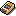 | 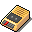 | 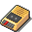 | 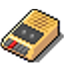 |
| Вектор |
Значки – це атрибути
Значки зберігаються як атрибут файлу. Однак це не означає, що кожен файл повинен мати цей атрибут, щоб з'являтися зі своїм значком у вікні Tracker: файли даних наслідують свій значок від свого типу файлу. Щоб глобально змінити значок типу файлу, скористайтеся панеллю налаштувань FileTypes. Якщо Ви хочете додати спеціальний значок лише до окремого файлу, скористайтеся доповненням FileType для нього. Докладнішу інформацію наведено у розділі Типи файлів.
Створення значків за допомогою Icon-O-Matic
Icon-O-Matic – це редактор значків Haiku, який може зберігати Ваші роботи у форматах HVIF, SVG або PNG. Значок можна безпосередньо прикріпити як атрибут до існуючого файлу або експортувати як ресурс чи вихідний файл, який використовується розробниками. Оскільки програму було розроблено для оптимізованого формату HVIF, його використання відображає внутрішню роботу цього формату.
На відміну від звичайних програм для векторної графіки, Ви не маєте справу з окремими об'єктами, кожен з яких включає усі свої специфічні властивості, такі як контур, ширина штриха, колір штриха, заливки тощо. Натомість Ви збираєте об'єкти («форми») зі спільних контурів і кольорів («стилів») та встановлюєте певні властивості. Таке повторне використання елементів є одним із секретів ефективності HVIF. Хоча це і накладає певні обмеження на дизайнера значків, але є і певні переваги.
Наприклад, повторно використовуючи контур, можна змінювати кілька об'єктів разом, маніпулюючи одним контуром. Подумайте про об'єкт і його тінь. Зміна їхнього спільного контуру змінить сам об'єкт і автоматично його тінь (можливо, трохи трансформовану/переміщену).
Подивіться на короткий огляд вікна Icon-O-Matic:
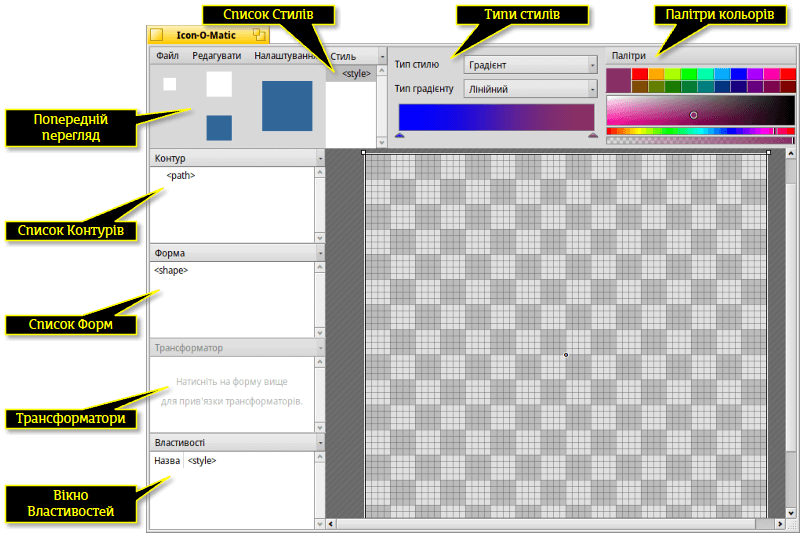Щоб створити будь-який видимий об'єкт на полотні, Вам потрібна форма з контуром і стилем. Зручно, що Ви можете створити один, два або усі три елементи разом за допомогою меню . Кожен тип об'єктів (Контури, Форми, Трансформатори та Стилі) має меню над списком елементів, яке містить різні команди. Кожен елемент має певні параметри, які задаються у вікні .
Контур
Контур складається з декількох точок, з'єднаних лініями або кривими Безьє. Щоб додати або змінити точки, переконайтеся, що контур вибрано у списку контурів.
Просте натискання кнопки миші на полотні створить першу точку. Встановлюючи точку, Ви вирішуєте, яка у результаті буде лінія – прямою чи кривою: просте натискання і відпускання створює пряму лінію, утримування кнопки миші і переміщення миші витягне маркери для кривої Безьє. Звісно, Ви можете змінити все це пізніше.
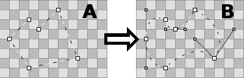Щоб потрапити з точки «А» в точку «Б», потрібно перетворити деякі точки з кутових на криві. Це робиться утримуванням клавіші ALT при натисканні на точку і розтягуванням маркерів. У результаті утворюється симетричний Безьє: другий маркер слідує за рухом іншого. Якщо Вам потрібно перемістити маркер незалежно, знову натисніть і перетягніть маркер Безьє, утримуючи клавішу ALT.
І навпаки, щоб перейти від Безьє до кутової точки, утримуйте клавішу ALT і натисніть на точку.
Щоб перемістити точку, просто натисніть і перетягніть її. Щоб виділити кілька точок, утримуючи клавішу SHIFT, розтягніть прямокутник виділення. Виділені точки позначаються червоною рамкою замість звичайної чорної.
Щоб вставити точку в контур, натисніть на з'єднувальній лінії між двома точками.
Виділені точки видаляються натисканням клавіші DEL або натисканням на точку з утриманням клавіші CTRL.
Курсор миші вказує на поточний режим роботи з точками:
| 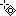 | 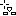 | 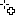 | 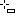 | 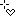 | 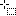 |
| Перемістити точку(ки) |
Вставити точку |
Додати точку |
Видалити точку CTRL |
Кутова↔Безьє ALT |
Виділити точки SHIFT |
Ви можете викликати контекстне меню, зробивши клік правою кнопкою миші на точці або виділених точках:
| ALT A | Виділяє усі точки поточного контуру. | |
| T | Поміщає усі виділені точки в прямокутник трансформації, щоб Ви могли переміщати, змінювати розмір і повертати їх разом. Працює так само, як і з формами, описаними трохи нижче. | |
| Розділяє вибрані точки на дві, одна з яких накладається на іншу. | ||
| Повертає виділені точки на 180°. Впливає лише на точки Безьє. | ||
| DEL | Видаляє вибрані точки. |
Меню «Контур»
Меню пропонує кілька очевидних пунктів: і та або контур. Інші пункти, можливо, потребують дещо більшого пояснення:
| Якщо контур не замкнутий (дивіться властивості контуру нижче), натискання на полотні завжди створює нову точку, з'єднуючи її з попередньою. Вибір пункту «Реверс» змінить цей порядок, і нова точка з'єднається з початковою точкою. | ||
| Найбільш корисна для імпортованих SVG, ця функція видаляє зайві точки. | ||
| ALT R | Практично, це переміщує початок контуру. Найкраще це видно при використанні незамкнутого контуру зі стилем і формою з трансформатором обрису. Отже, якщо Ваш контур має вигляд ⊂, він обертатиметься так: ⊂ ∩ ⊃ ∪. | |
| ALT SHIFT R | Робить те ж саме в іншому напрямку. |
Властивості Контурів
Вікно у нижній лівій частині вікна програми містить усі доступні настройки вибраного на даний момент контуру. Контур має лише два параметри: і , який визначає, закритий він чи ні.
Форма
Форма об'єднує один або декілька контурів зі стилем. Фактично, це об'єкт, який Ви побачите на полотні. Групування здійснюється за допомогою чекбоксів навпроти контурів і стилів: Просто виберіть фігуру і позначте потрібний контур і стиль.
Форма визначає спосіб застосування контуру і стилю, наприклад, якщо об'єкт з заливкою кольором (зафарбований) або лише обведений (це робиться за допомогою трансформаторів на формі, про це ми поговоримо пізніше). Крім того, форму можна переміщати, обертати або змінювати розмір, не чіпаючи використаний контур. Таким чином, Ви можете повторно використати один контур і отримати різні, але пов'язані між собою форми.
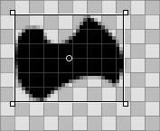Коли Ви вибираєте форму у списку, навколо неї малюється прямокутник. Залежно від того, де саме Ви її берете, фігура переміщується, змінюється її розмір або вона повертається навколо точки в центрі, яку можна переміщати. Утримуючи клавішу SHIFT, Ви зафіксуєте напрямок під час переміщення, обмежите поворот кутами по 45° та збережете співвідношення сторін під час зміни розміру. Вказівник миші вказує на поточний режим:
| 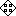 | |||
| Переміщення | Зміна розміру | Поворот | Переміщення точки обертання |
Форми лежать одна над одною, кожна на своєму шарі, якщо хочете. Щоб змінити їхній порядок, перетягніть рядок із записом форми в іншу позицію у списку форм.
Меню «Форма»
Меню пропонує вже згадану вище можливість а також, зробити або форму.
За допомогою пункту меню Ви можете створити особливий тип форми. Він дозволяє завантажити будь-яке растрове зображення (наприклад, PNG або JPEG), щоб використовувати його як фон під час роботи над значком. Це дуже зручно, наприклад, при створенні векторної версії існуючого растрового значка. З референсним зображенням можна маніпулювати як з будь-якою іншою формою (переміщати, обертати, змінювати розмір), але воно не буде частиною значка, при збереженні у форматі HVIF.
Крім того є пункти:
| Скасовує усі застосовані до форми переміщення, зміни розміру, повороти та інші трансформації. | ||
| Коли Ви трансформуєте форму, прив'язані до неї контури залишаються у початковому положенні. Така поведінка передбачена; можливо, цей контур використовується для кількох форм або Ви навмисно використали пункт меню , щоб встановити точки на точних межах пікселів. Якщо ні, пункт «Зафіксувати трансформацію» застосує поточну трансформацію форми до прив'язаного контуру (контурів). Команда «Скинути трансформацію», виконана пізніше, повертає форму до цього нового стану. |
Властивості Форм
Окрім рядка , у вікні форми є такі параметри:
| Мінімальний рівень деталізації | ||
| Максимальний рівень деталізації |
Референсні зображення натомість мають властивість , значення якої задає їхню прозорість (0-255).
Рівень деталізації (LOD)
| 16x16 | 32x32 | 64x64 |
| 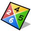 |
Бачите, що у 16-піксельній версії значка BeVexed немає цифр? Це зроблено за допомогою параметра «Рівень деталізації» їхніх форм.
За допомогою LOD Ви управляєте видимістю форми залежно від її розміру. Таким чином, Ви можете прибрати деталі значка, які добре виглядають на більшому значку, але не дуже добре на його меншій версії.
Ось як це працює: LOD 1.0 визначається як розмір значка у 64 пікселі. Щоб отримати LOD певного розміру значка, просто розділіть його на 64, наприклад, значок розміром 16 пікселів має LOD 16/64 = 0,25. Форму не буде видно нижче її і вище її .
Отже, якщо Ви встановите форми на 0.0 і на 0.5, це означає, що форму буде видно лише для значків розміром менше або дорівнює 32 пікселя. Якщо Ви хочете виключити значки розміром 32 пікселі, Вам потрібно встановити значення нижче 0.5, скажімо 0.49.
LOD можна використовувати не лише для того, щоб не деталізувати форми, але й для того, щоб, наприклад, змінювати ширину обрису для різних розмірів, якщо Ви вважаєте, що це потрібно. Просто зробіть дублікат форми, внесіть зміни і встановіть обидва параметри LOD для відображення однієї або іншої форми. Тут криється єдине джерело потенційної плутанини, коли Ви мимоволі перекриваєте LOD форм і дивуєтеся, чому при певному розмірі видно обидві…
Наприклад, якщо «Форма 1» має бути показана нижче 48 пікселів, а «Форма 2» – вище 48 пікселів (LOD: 48/64 = 0,75):
| Правильно | Неправильно | ||||
| Форма 1 | Мін. LOD | 0.00 | Мін. LOD | 0.00 | |
| Макс. LOD | 0.74 | Макс. LOD | 0.75 | ||
| Форма 2 | Мін. LOD | 0.75 | Мін. LOD | 0.75 | |
| Макс. LOD | 4.00 | Макс. LOD | 4.00 | ||
Стиль
Стиль може бути як суцільним кольором, так і градієнтом.
Крім попередньо визначених кольорів на палітрі , Ви можете змішувати свої власні, натиснувши на поточний колір. Також зверніть увагу на повзунок під спектром кольору, який встановлює альфа-канал (прозорість).
Ви можете швидко створити новий стиль, змішавши колір і просто перетягнувши його до списку стилів.
Якщо ви обираєте градієнт, Ви встановлюєте тип (, , , ) а потім визначаєте початковий і кінцевий кольори. Це робиться за допомогою перетягування з палітри кольорів на відповідний індикатор кольору під градієнтом.
Звичайно, Ви можете пересувати ці індикатори, щоб змінити градієнт як Вам подобається. Ви можете вставити інші індикатори, щоб додати більше кольорів, двічі натиснувши на градієнті. Натискання клавіші DEL видаляє вибраний індикатор.
Ви можете переміщати, змінювати розмір і обертати рамку градієнта на полотні так, щоб вона відповідала Вашим потребам. Це працює так само, як і з формами.
Меню «Стиль»
Меню пропонує вже звичні пункти , , стиль і .
Властивості Стилів
– це єдина стилю.
Трансформатор
Форма може мати трансформатори, які змінюють її вигляд. Ефекти, однак, більш тонкі, ніж перетворення вантажівки на бойового робота…
Пункт «Додати» меню «Трансформатор»
| Додає обрис (контур) до форми. Окреслює лінією. | ||
| Штрихує контур форми замість того, щоб застосувати стиль. | ||
| Дозволяє переміщати, незалежно один від одного, кути форми для створення ефекту перспективи. |
Залежно від типу трансформатора, Ви отримаєте різний набір властивостей.
Властивості Трансформаторів
Окрім рядка трансформатора, у вікні є такі параметри (залежно від типу трансформатора вони дещо відрізняються):
| Задає ширину Штриху або Обрису. | ||
| Тільки для Тр «Штрих». Визначає кінцеві точки лінії: , або . | ||
| Тільки для Тр «Обрис». Визначає, де знаходиться лінія окреслення (обвідна) – всередині або зовні контуру. | ||
| Визначає спосіб з'єднання ліній у точці: , або . | ||
| Цей параметр впливає на зовнішній вигляд з'єднання тільки тоді, коли для параметра встановлено значення «Miter». |
Збереження значка
У верхній частині вікна є панель головного меню: , , . Користування ним не потребує пояснень, тому ми розглянемо лише те, як зберегти Вашу роботу.
Пункт меню дозволяє зберегти значок у спеціальному форматі Icon-O-Matic, який записує додаткову інформацію, таку як назви контурів, форм і стилів. Після експорту значка в інший формат, з метою заощадження місця, ці дані будуть прибрані з файлу. Це гарна ідея – створити резервну копію Вашої роботи, оскільки без перейменування об'єктів усі вони називаються «<path>/<shape>/<style>», що робить внесення конкретних змін нудною роботою.
Пункт меню відкриває знайому файлову панель збереження зі списком форматів файлу у нижній частині панелі, який пропонує такі варіанти:
| HVIF | Формат векторного значка Haiku | |
| HVIF RDef | Зберегти як ресурс, який використовується програмістами | |
| Вихідний код HVIF | Зберегти як вихідний код, який використовується програмістами | |
| SVG | Зберегти у форматі SVG | |
| PNG | Зберегти у форматі PNG розміром 64px | |
| Комплект PNG | Зберегти у форматі PNG як набір значків з розмірами 16, 32 та 64px | |
| BEOS:ICON attribute | Вибрати файл і встановити його атрибут значка безпосередньо | |
| META:ICON attribute | Вибрати файл і прикріпити значок як метадані |
Поради та Рекомендації
Кілька речей, про які слід пам'ятати при роботі з Icon-O-Matic і деякі загальні поради щодо його використання:
Прочитайте Icon Guidelines, щоб дізнатися про важливі характеристики значків Haiku, наприклад, перспективу, тіні та палітру кольорів Haiku.
Завжди намагайтеся мінімізувати використання контурів, оскільки вони є самими затратними з точки зору розміру файлу. Повторно використовуйте контури всюди, де це можливо, проводьте маніпуляції з формами та працюйте з їхніми трансформаторами. Розумне використання градієнтів також може заощадити місце.
Під час редагування контурів, де це можливо, слід застосувати один з варіантів визначених у пункті меню . Точки контуру, які вирівнюються до сітки 64x64 пікселів, займають менше місця у пам'яті. Ви також отримаєте найчіткіший вигляд, якщо встановите точки на точних межах пікселів. Наприклад, важливо вирівняти найбільш помітні контури за сіткою 16x16.
Переконайтеся у попередньому перегляді, що Ваш значок все ще добре виглядає у форматі 16x16. Можливо, Ви захочете скористатися настройкою Рівень деталізації, описаною у параграфі «Форма».
Існує простий спосіб створення літер, навіть якщо Icon-O-Matic не надає такого інструменту. Просто введіть текст у текстовому редакторі, наприклад, StyledEdit, задайте тип і стиль шрифту та перетягніть або копіюйте вибраний текст до Icon-O-Matic. Це створить відповідні контури і форми.
Якщо до форми прив'язати декілька контурів, їхні області перекриття нейтралізують одна одну. Коли один контур повністю знаходиться всередині іншого, він практично створює отвір у формі.
Ви можете збільшувати або зменшувати масштаб полотна за допомогою коліщатка миші. Змінювання панорами виконується або кліком і перетягуванням середньою кнопкою миші, або звичайним кліком лівою кнопкою миші і перетягуванням з утриманням клавіші SPACE.
{kind=link}